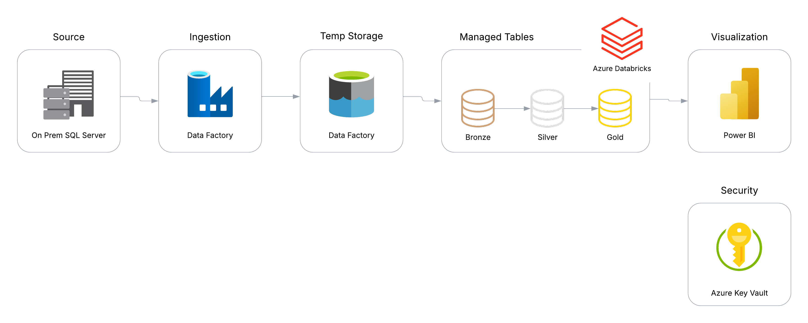

Behind the Scenes: My Senior Project on Cloud Data Migration

Introduction
Did you know that behind every analysis, dashboard, and report lies an intricate process of data wrangling? Before any insights can be drawn, data must first be collected, cleaned, and formatted appropriately. In the industry, this crucial work falls to Data Engineers – the unsung heroes who extract data from various sources, transform it through complex processes, and deliver it in a usable state to Data Scientists and Analysts. Without these engineers laying the groundwork, data analysis simply couldn’t happen.
You might be wondering, “What does this data engineering work actually look like in practice?” That’s exactly what this blog post will show you.
My senior project tackles a scenario that Data Engineers commonly face: migrating an existing data infrastructure to the cloud. If terms like “data migration” and “cloud infrastructure” sound like technical jargon, don’t worry – I’ve written another article called “Why Migrate to the Cloud?” that explains these concepts in more detail.
Through this project, I hope to illuminate a vital but often overlooked aspect of the data world and highlight the essential role that Data Engineers play in enabling modern analytics.
Inspiration
The inspiration for this project emerged from an unexpected place – the ashes of a failed first idea. Sometimes the best opportunities arise from setbacks. This project presented the perfect balance: it satisfied the requirements for my senior project while filling critical knowledge gaps in my development as a Data Engineer. It allowed me to dive deep into cloud migration tools, understand the business considerations that drive cloud adoption decisions, and gain hands-on experience that textbooks simply can’t provide. The project became not just an academic requirement but a stepping stone in my professional journey.
Background Context
Before diving into the technical details, let’s understand the foundation of this project. I chose Microsoft’s AdventureWorks, a practice database that simulates a fictional company specializing in bikes and accessories. This was an ideal starting point because it comes with a pre-built database backup (.bak file) that can be easily restored – allowing me to focus on the migration process rather than database creation.
For the technical implementation, I selected tools from the Microsoft Azure ecosystem, which offers seamless integration with existing Microsoft products. The technology stack includes:
- Microsoft SQL Server (source database)
- Microsoft Azure (cloud platform)
- Azure Data Factory (data integration service)
- Azure Data Lake Storage (scalable data storage)
- Azure Databricks (analytics platform)
This combination of tools represents a typical migration path for companies moving their Microsoft-based data systems to the cloud.
The Migration Process
Step 1: Setting Up the On-Premises Environment
First, I had to simulate a typical on-premises setup. I installed SQL Server on my local machine and restored the AdventureWorks lightweight database. This represented the legacy system that many companies still use today – a traditional relational database sitting on a physical server somewhere in the office.
The database itself contained 10 tables spanning sales, production, purchasing, and human resources – a complex but realistic dataset that would test my migration skills.
Step 2: Designing the Cloud Architecture
Before jumping into the migration, I needed a solid plan. I sketched out a modern data architecture with these components: Azure Data Factory for orchestration and data movement Azure Data Lake Storage Gen2 for a temporary storage location Azure Databricks for transformation and analysis into managed tables.
This architecture follows the modern data lakehouse pattern, combining the flexibility of data lakes with the reliability and performance of data warehouses.
Step 3: Extracting The Data
Using Azure Data Factory, I created pipelines to extract data from the on-premises SQL Server and load it into Azure Data Lake Storage. This process involved:
1. Setting up a self-hosted integration runtime to connect to my local SQL Server
2. Creating linked services to connect to both source and destination
3. Developing extraction pipelines for ingesting the data
One of the key challenges was encountering network errors. Thankfully with the integration runtime that Azure Data Factory has, that solved those issues.
Step 4: Loading and Transforming the Data
With the raw data in Azure Data Lake Storage, I used Azure Databricks to transform it into a more analysis-friendly format. This involved:
- Using the medallion architecture (bronze, silver, gold)
- Applying transformations to the data
- Creating aggregations for common analytics needs
- Implementing data quality checks
I used Delta Live Tables for this to learn that method. That introduced its challenges and demanded that I write my code in a specific way, using SWE best practices to accomplish it.
Challenges and Solutions
Limited Budget
As a student, I had limited Azure credits. I could only do so much before running out of resources. So I carefully planned my architecture to minimize costs, using Azure’s free tier where possible and shutting down resources when not in use.
Skills
I needed to learn and even re-learn some tools I had previously worked with. There is so much to the migration, it takes planning and effort to accomplish.
Network Issues
Ideally, I would have loved to just pull from my on-prem SQL Server directly into Databricks, reducing the time and tools I needed to learn. But I realized that I was getting now where with the networks from my laptop to the cloud and quickly decided it wasn’t worth the fight for this project.
Lessons Learned
This project taught me several valuable lessons: - Cloud migration is never just “lift and shift” – it requires rethinking how data is structured and processed - Data quality issues become extremely apparent during migration - Security and governance need to be baked in from the start, not added later - Automation is essential for repeatable, reliable processes - Documentation is crucial, especially for complex data pipelines
Conclusion
Data engineering might not be the most visible part of the data world, but it’s the foundation that everything else rests upon. This project gave me deep appreciation for the complexities involved in moving data infrastructure to the cloud.
Whether you’re a fellow student, a professional looking to transition to data engineering, or someone just curious about what happens behind the scenes, I hope this project has given you insight into this fascinating field.
Remember, before any data analysis can begin, someone has to make sure the data is available, clean, and ready to use. That’s what data engineers do, and I’m proud to be joining their ranks.